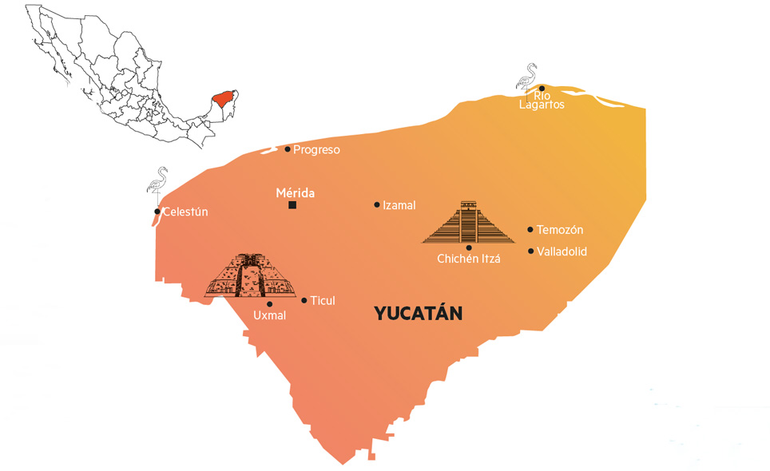

Geografia
Yucatán es una península ubicada en el sureste de México, caracterizada por su terreno mayormente plano y calizo, con pocas elevaciones. Su clima es cálido y húmedo, con una temporada de lluvias en verano. Destaca por sus formaciones naturales únicas, como los cenotes —pozos de agua dulce formados por la erosión del suelo—, y su extensa red de ríos subterráneos. Además, cuenta con costas en el Golfo de México, que ofrecen playas y manglares importantes para la biodiversidad de la región.